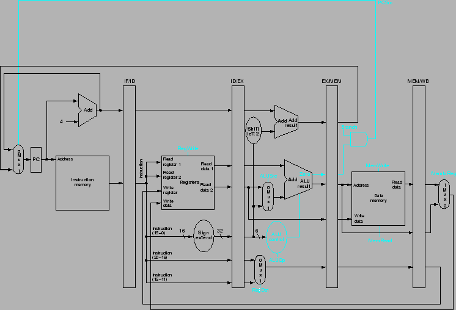
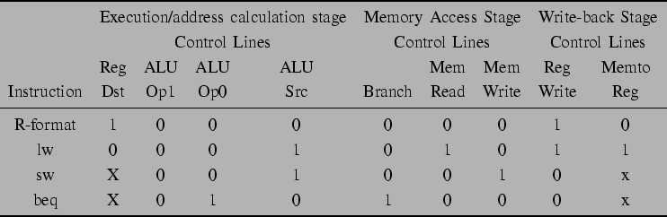
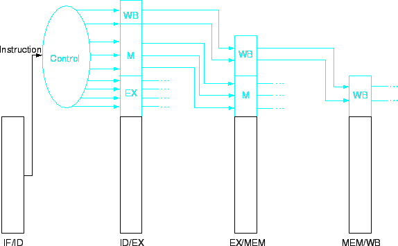
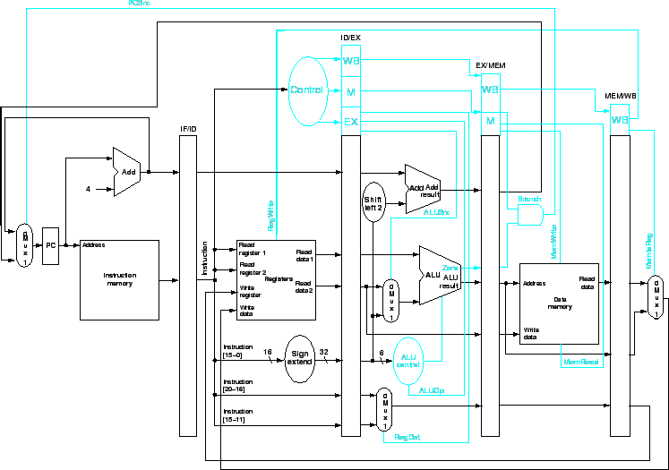

Next: Data Hazards และ Forwarding
Up: การเพิ่มประสิทธิภาพโดยเทคนิคไพพ์ลายน์
Previous: แผนภาพแสดงการทำงานของไพพ์ลายน์
Contents
Index
การควบคุมไพพ์ลายน์
เราสามารถเพิ่มชุดควบคุมเข้าลงไปในเส้นทางข้อมูลแบบไพพ์ลายน์ได้โดยตรง และส่งผ่านสัญญาณควบคุมผ่านไปยังสเตทต่างๆ ตามลำดับการทำงาน รูป 6.22 แสดงสายสัญญาณควบคุมตามจุดต่างๆ ของเส้นทางข้อมูลแบบไพพ์ลายน์
Figure 6.22:
สายสัญญาณควบคุมตามจุดต่างๆ ของเส้นทางข้อมูลแบบไพพ์ลายน์
|

|
รูป 6.23 และ 6.24 แสดงการตั้งค่าสัญญาณควบคุมสำหรับคำสั่ง R-Type ที่มีการทำงานเหมือนกับโปรเซสเซอร์ที่ทำงานในวงรอบนาฬิกาเดียว
ในการควบคุมไพพ์ลายน์ เราเพียงกำหนดสัญญาณควบคุมในสเตทนั้นๆ เนื่องจากสัญญาณควบคุมใช้งานเฉพาะสเตทนั้นๆ เท่านั้น เราสามารถแบ่งการควบคุมออกเป็นห้ากลุ่มได้ดังต่อไปนี้
Figure 6.23:
การตั้งค่า ALUOp สำหรับคำสั่งแบบ R-Type
 |
Figure 6.24:
Truth Table สำหรับชุดควบคุมโปรเซสเซอร์ MIPS
|  |
- Instruction Fetch: ในสเตทนี้การอ่านหน่วยความจำ และการเขียน PC มีการทำงานทุกวงรอบนาฬิกา จึงไม่ต้องการการสัญญาณควบคุมพิเศษใยสเตทนี้
- Instruction Decode และ Register File Read: เช่นเดียวกับสเตทก่อนหน้า ทุกคำสั่งมีการทำงานทุกสัญญาณวงรอบนาฬิกา จึงไม่ต้องการการสัญญาณควบคุมพิเศษใยสเตทนี้
- Execute และ Adders Calculation: ในสเตทนี้มีสัญญาณที่ต้องตั้งค่าได้แก่ RegDst, ALUop, และ ALUSrc ซึ่งสัญญาณเลือก Result Register, เลือกการทำงาน ALU, และ Read data หรือ ทำ Sign-Extended
- Memory Access: สัญญาณในกลุ่มนี้ได้แก่ Branch, MemRead, และ MemWrite ซึ่งสัญญาณเหล่านี้ถูกตั้งค่าสำหรับ branch equal, load, และ store
- Write Back: ในสเตทนี้มีสัญญาณควบคุมสองสายได้แก่ MemtoReg และ RegWrite
รูป 6.25 แสดงสายสัญญาณควบคุมที่ต้องส่งผ่านไปยังสเตทหลังตามลำดับ และ
รูป 6.26 แสดงเส้นทางข้อมูลที่มีความสมบูรณ์ทั้งรีจีสเตอร์ไพพ์ลายน์ และ สายสัญญาณควบคุม
Figure 6.25:
สายสัญญาณควบคุมสำหรับสามสเตทหลัง
|

|
Figure 6.26:
เส้นทางข้อมูลที่มีความสมบูรณ์ทั้งรีจีสเตอร์ไพพ์ลายน์ และ สายสัญญาณควบคุม
|

|
Next: Data Hazards และ Forwarding
Up: การเพิ่มประสิทธิภาพโดยเทคนิคไพพ์ลายน์
Previous: แผนภาพแสดงการทำงานของไพพ์ลายน์
Contents
Index
Vara Varavithya
2005-08-18